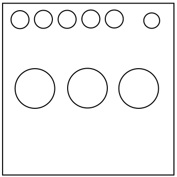

On the Subject of DingBats
Why would you even use this font if you can’t read it without a decoder?...
The 3 buttons and their values (corresponding to their DingBat symbols), left-to-right, are referred to as A, B, and C in this manual.
Stage 1
- If (A + B) > 100, press A.
- Otherwise, press the LOWEST-valued button.
Stage 2
- If abs(A - C) > 40, press B.
- Otherwise, press the HIGHEST-valued button.
Stage 3
- If (B * C) > 2500, press C.
- Otherwise, press the MIDDLE-valued button.
Stage 4
- Press the LOWEST-valued button.
Stage 5
- Press the HIGHEST-valued button.